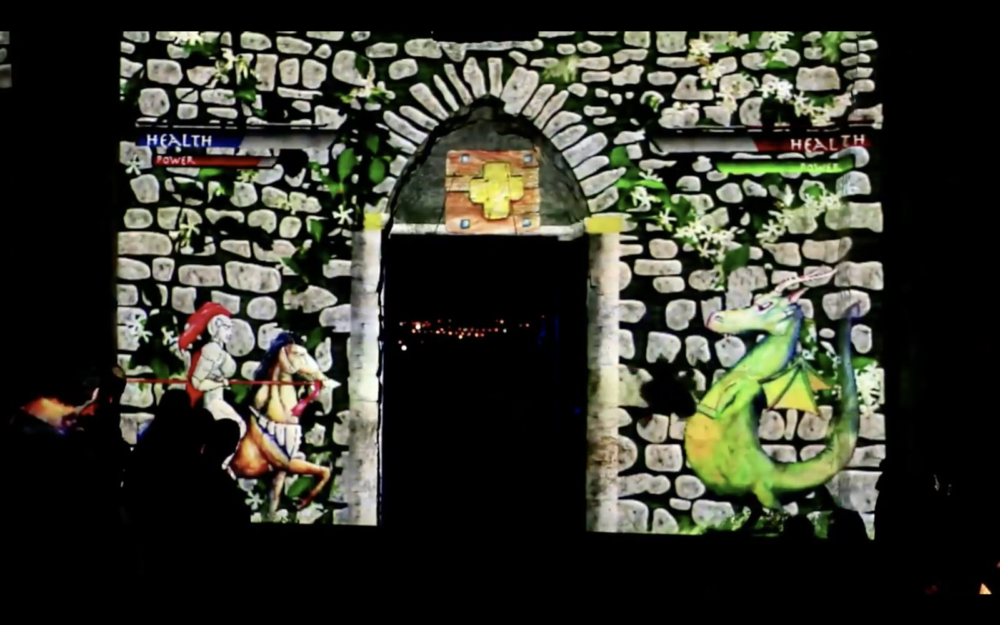
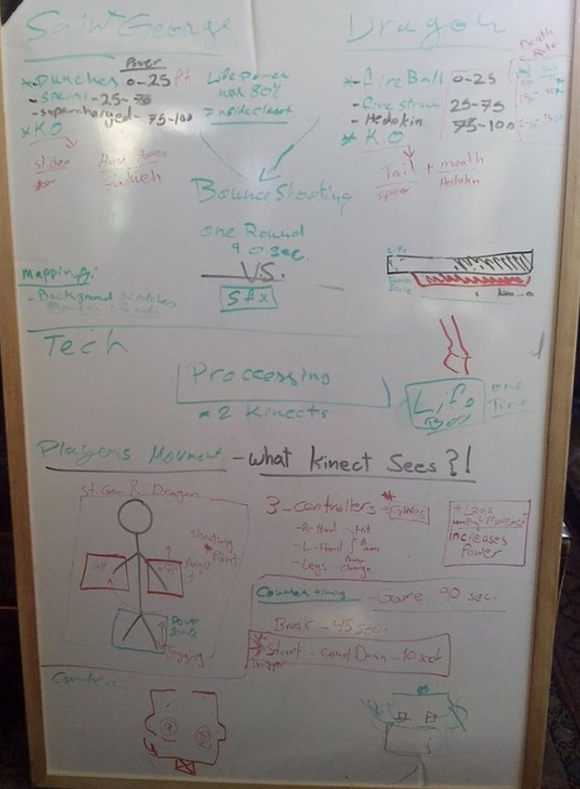
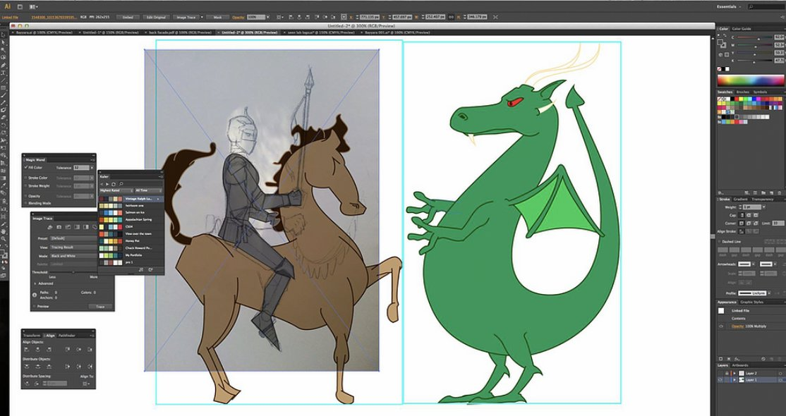
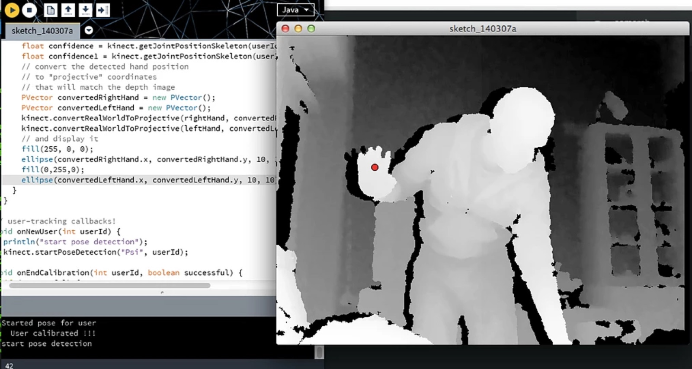

Work / Interactive Installation / Heritage
Castle Defender
A historic site people had stopped visiting became a stage: a body-controlled game projected onto the castle itself, inviting passers-by to defend the walls, and rediscover the heritage of the place while playing on it.

Heritage that nobody visits is heritage that fades
The brief was civic: encourage people to come to a historical site and revive the heritage of the place. Signage and plaques weren’t failing for lack of information, they were failing for lack of a reason to show up.
Our answer was to make the site itself playable. The castle isn’t the backdrop of the game; it is the game. And play turned out to be civic infrastructure: translating the dense, bureaucratic data of heritage planning into something a passer-by can argue with, collaborate over, and care about.
Prototype, test, enhance, repeatedly
We reached the final game design through multiple design thinking sessions, working prototypes, and a lot of usability testing. Each round forced enhancements to both the visuals and the code, public installations get tested by everyone who walks past, not just recruited participants.
- Body tracking via Microsoft Kinect made the player’s movement the controller, no instructions, no hardware to hand out.
- Processing ran the game logic and visuals.
- Projection mapping aligned the play field to the real stones, arches, and gate of the castle.


No screen, no controller, no tutorial. If you can wave your arms, you’re already playing.interaction principle
Designing and shipping the game
I designed the interactions of the game and developed it, combining the Kinect tracking, Processing runtime, and projection pipeline into one working installation. It was a new platform for the whole team, and my first game at this scale.
Castle Defender was one of the most challenging projects I’ve led precisely because nothing could be faked: the projection had to fit the real wall, the tracking had to survive real crowds, and the game had to be fun in the dark, outdoors, with strangers.
The result revived engagement with the site, community evenings where the immediate, visual feedback of play did what plaques and consultations couldn’t: it made the heritage worth showing up for.
